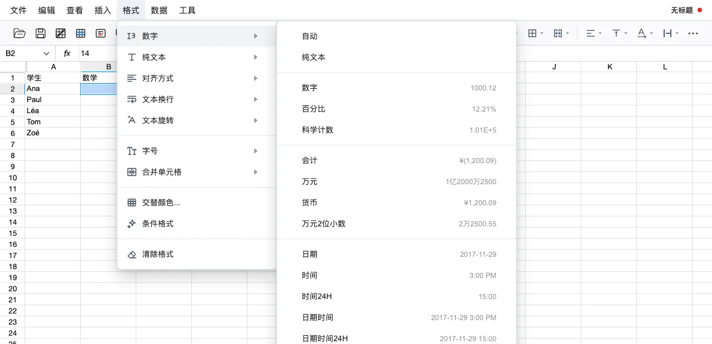

界面

从上到下：菜单栏、按钮栏、公式栏、工作表、工作表标签和缩放。
菜单
| 菜单 | 内容 |
|---|---|
| 文件 | 打开、保存，打印 |
| 编辑 | 撤销、重做，向下、向右填充 |
| 查看 | 网格线，冻结 |
| 插入 | 图片，图表，复选框、下拉列表 |
| 格式 | 数字，文本、对齐、合并，交替颜色，条件格式 |
| 数据 | 排序和筛选 |
| 工具 | 保护，本手册（用户手册），DocTools，源代码，版本（关于...） |
勾号表示已启用的选项：显示网格线、冻结单元格、粗体、筛选、受保护的工作簿。

按钮栏
| 按钮 | 作用 |
|---|---|
| 打开、保存 | |
| 显示或隐藏网格线 | |
| 交替颜色 | |
| 条件格式 | |
| 保护；工作簿受保护时呈蓝色 | |
| 插入图表 | |
| 插入图片 | |
| 撤销、重做 | |
| 清除格式 | |
| 百分比、减少或增加小数位 | |
| 自动、Arial、10 | 数字格式、字体、字号 |
| 粗体、斜体、下划线 | |
| 文字颜色、填充颜色 | |
| 边框、合并 | |
| 对齐、旋转、换行 | |
| 冻结 | |
| 自动求和及其他公式 | |
| 排序和筛选 |
按钮的小箭头打开其选项；按钮本身重复上一次的选择。窗口较窄时，最后几个按钮收在 后面。
公式栏
- 左侧是名称框：选区的地址，或区域的名称。其箭头列出命名区域，并可打开名称管理器。
- fx 右侧是单元格的内容，包括公式，可在此修改。
工作表
标签与缩放
底部的 添加工作表， 列出所有工作表（工作表）。右侧的 − 和 + 调整缩放；单击百分比可选择 10% 到 400%。
撤销
或 Ctrl Z 撤销，、Ctrl Y 或 Ctrl Shift Z 重做：输入、粘贴、格式设置、插入。打开工作簿、显示或隐藏网格线、保护工作簿、添加名称或条件格式规则时，历史记录重新开始。图表不在其中：用图表自己的按钮修改或删除。